Llámanos
Cuéntanos exactamente lo que te ocurre, sin moverte de donde estés.
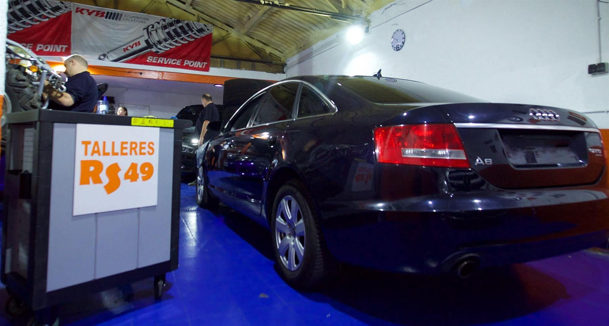
Audi, BMW, Mercedes y Volkswagen. Vamos a buscar tu coche donde se encuentre y te lo devolvemos, de media, en uno o dos días.
Cuéntanos exactamente lo que te ocurre, sin moverte de donde estés.
Vamos a buscar tu coche donde se encuentre, sin que te preocupes por nada.
Descansa y deja que nuestros profesionales se ocupen de tu coche.
Te entregamos el coche donde tú quieras. Confía y disfruta.
Pero también trabajamos con todas las demás
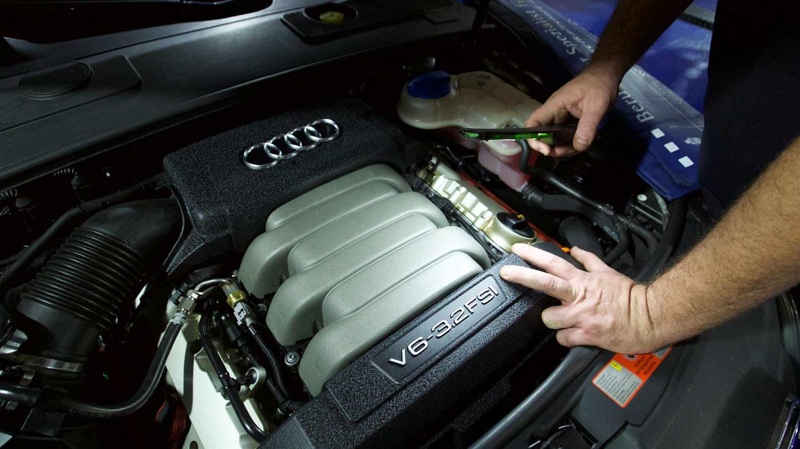
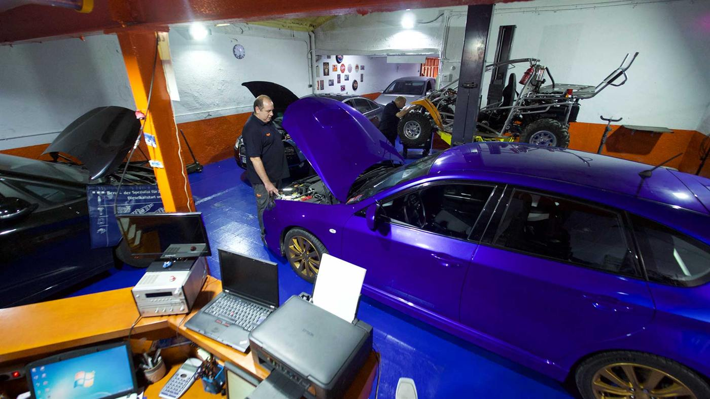
Tratamos tu coche como si fuera nuestro
Taller RS 49 nace en 1972 como un taller mecánico familiar. Desde sus inicios siempre hemos sido una empresa que ha buscado dar el mejor servicio de calidad. La fidelidad de nuestros clientes es nuestra mejor recompensa.
El creador de la empresa comenzó su carrera como jefe de taller de las marcas BMW y Porsche. Es en 1972 cuando decide crear su propio taller buscando en esencia la calidad en el trabajo y el mejor trato al cliente. Desde entonces siempre hemos intentado mantener esta línea: aportar la máxima calidad y el mejor servicio posible al cliente.
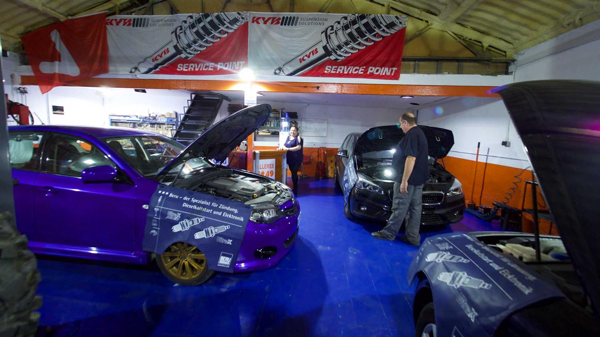
Su nivel de exigencia es máximo. Se preocupa por cada detalle y nunca deja nada a la improvisación.
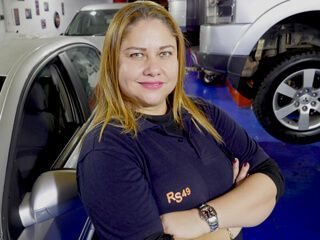
Es el eje organizativo de la empresa. La agenda está en su cabeza y la amabilidad es su seña de identidad.
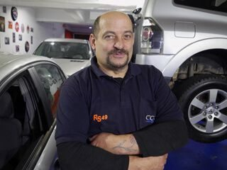
Destaca por la organización y la calidad en el trabajo. Supervisa que todo funcione a la perfección.
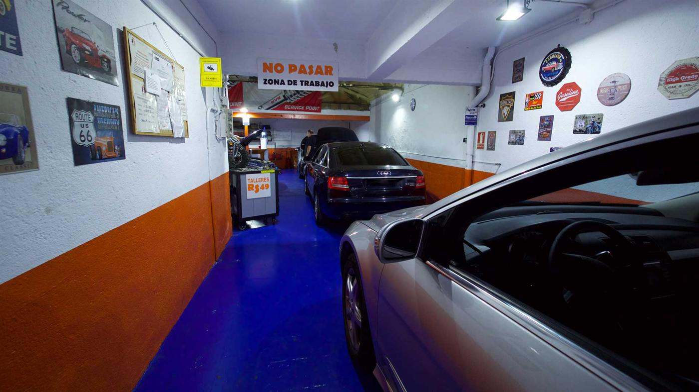
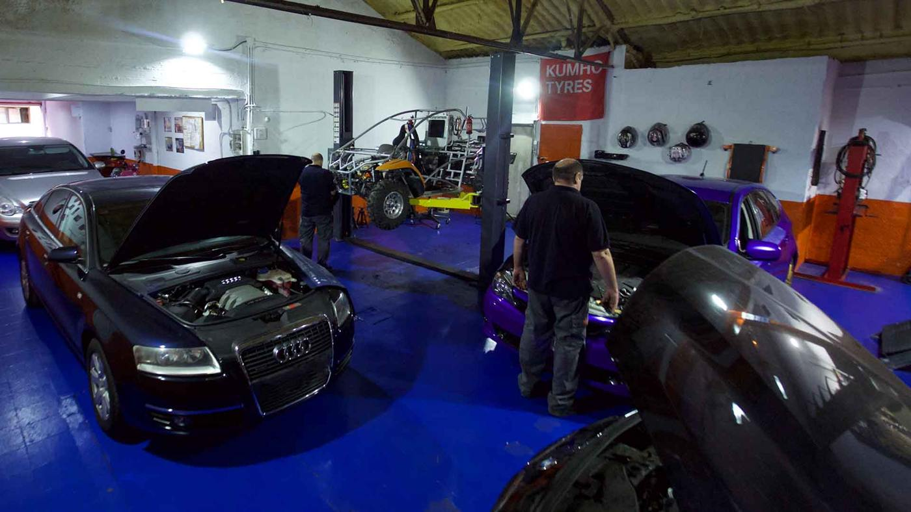
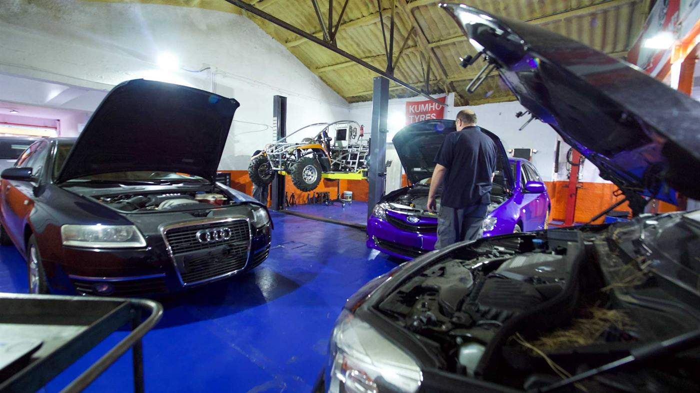
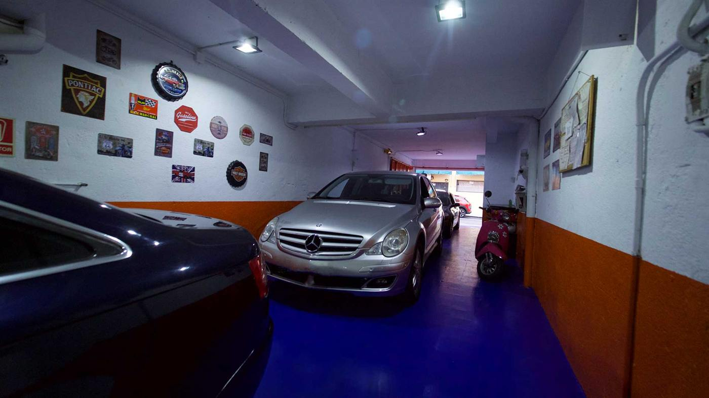
Tenemos una media de reparación de entre 1 y 2 días. Nos esforzamos por tener tu coche listo tan pronto como sea posible.
Nuestro equipo tiene unos estándares de calidad muy elevados. Tratamos tu coche como si fuera nuestro.
Porque la calidad no está reñida con el precio. Buscamos el equilibrio perfecto entre calidad y servicio.
Nuestros clientes, una vez que prueban, repiten. Tenemos una clientela fiel a nuestra forma de trabajar.
Es impresionante la calidad del servicio, rapidez y profesionalidad de este taller, ya no los encuentras así. Recomiendo 100% al equipo de profesionales que hay en este taller. ¡Muchas gracias!
Excelente taller mecánico, son de pura confianza, siempre con un diagnóstico del coche acertado. Si tú no puedes llevar el coche al taller te vienen a domicilio a por él y te lo devuelven sin problema ninguno. Trato excelente desde la recepción hasta el taller.
Excelentes profesionales. Si alguien puede solucionar tu problema en el coche son ellos. Utilizo mi coche para trabajar y después de 220.000 km y 5 años lo tengo como el primer día. Un 10 en profesionalidad y otro 10 en trato personal.
Un buen taller mecánico con un equipo de profesionales de categoría excelente, te explican todo con detalle y resuelven tus dudas. Dejar tu coche en este taller te da total confianza, gracias por tratarnos tan bien a nosotros y a nuestros coches.
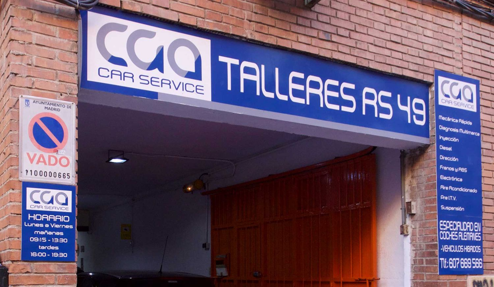